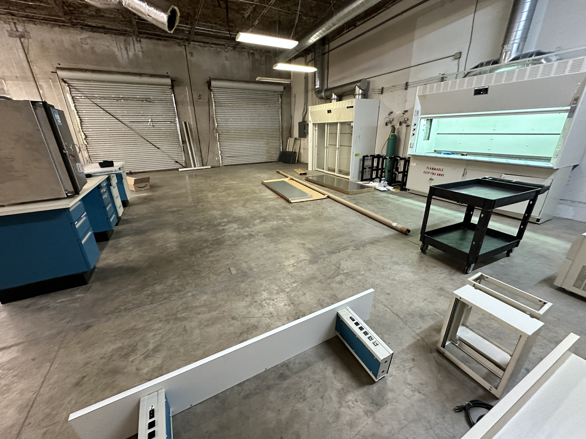
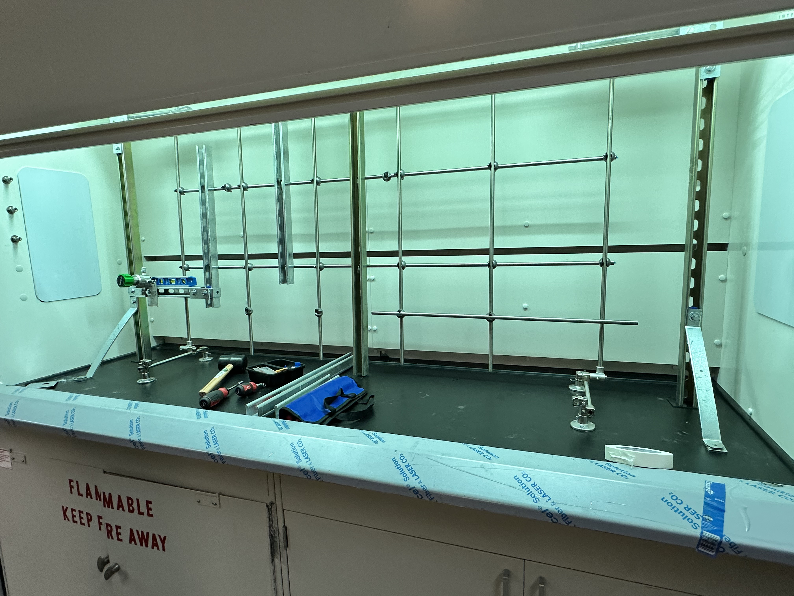
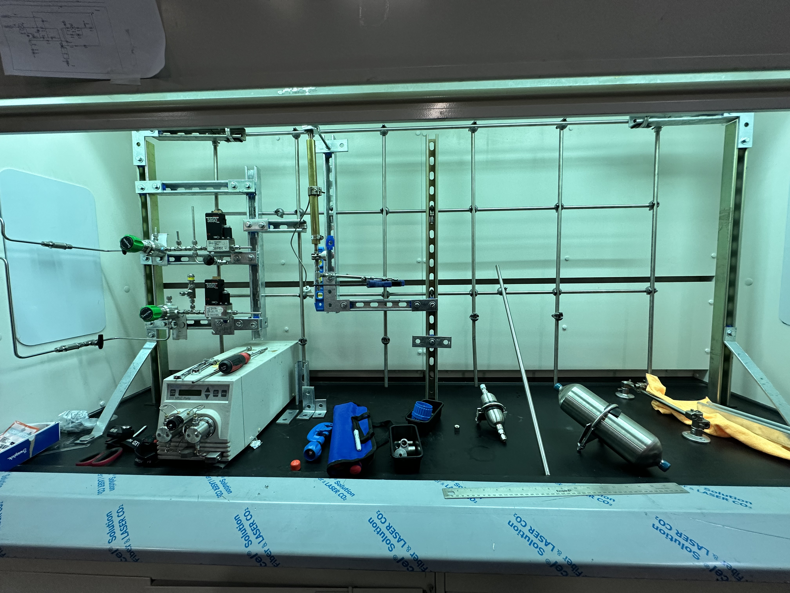
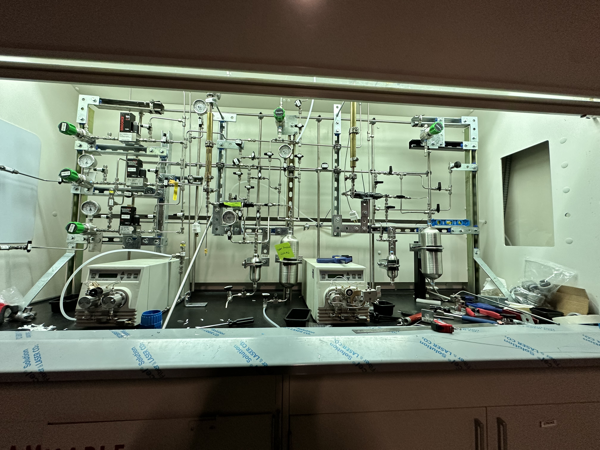
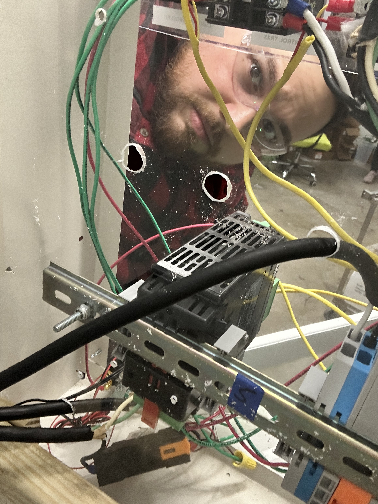
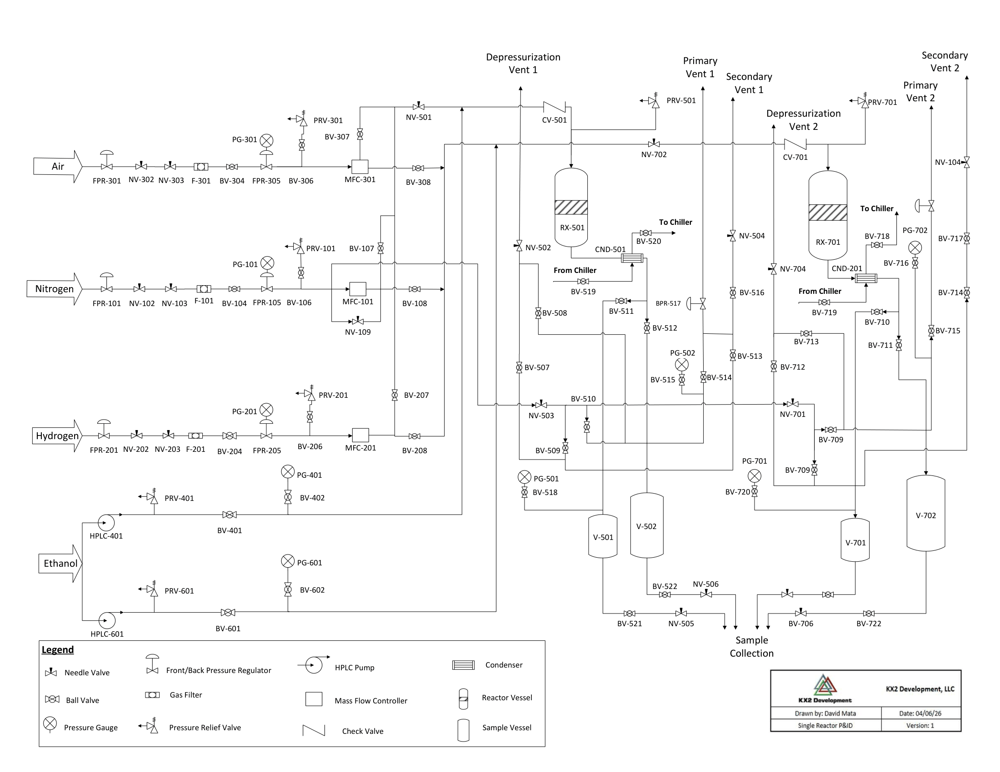
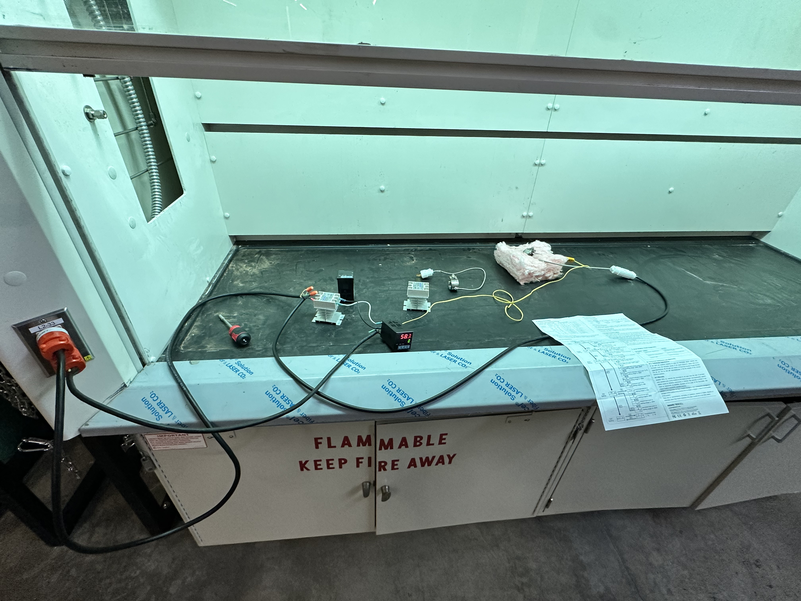

Independent Dual-Reactor System
Built a two-reactor experimental system within a fume hood, reconfiguring a reference setup from reactors in series to two independently operated reactor lines capable of running experiments simultaneously.
Adapting an existing design to a different process
The new laboratory required equipment suited to different chemistry and operating requirements than an existing setup elsewhere in the facility. The reference design connected two reactors in series. For the new experimental program, I redesigned the configuration around independently operated reactors and drew a new piping and instrumentation diagram (P&ID).
The primary design objective was to let two experiments proceed at the same time without requiring the reactors to run sequentially.


Two independently operated reactor lines
Each reactor was configured as an independent experimental system, with its own pressure-related hardware and sampling provisions. The reactors were installed as part of a two-reactor setup in a fume hood. This architecture provided flexibility to operate two separate experiments concurrently.



Component selection for the expected operating range
The expected operating pressures were approximately 200–400 psi. Pressure gauges, relief devices, and upstream/downstream pressure regulators were selected with that range in mind.
These values describe the equipment selections for the project; they are not a substitute for a complete pressure-system design or relief-device assessment.

Dual sample vessels for each reactor
Each reactor was equipped with two sample vessels: one 150 mL and one 1,000 mL. The larger vessel was selected to support experiments with longer run durations.
Having two vessels available on each reactor also allowed experiments to continue while a sample was collected from one vessel, reducing the interruption associated with sampling.
Revised piping & instrumentation diagram
I developed a new P&ID for the independent-reactor configuration rather than reusing the original series-layout drawing. The diagram documents the system configuration and the associated instrumentation.

Connecting the reactors to the electronic control box
The reactor system was operated alongside a purpose-built electronic control enclosure that powers the heaters, mass flow controllers for gas delivery, and feedstock pumps. It also integrates PID temperature regulation and a separate high-temperature global shutdown function.
Reducing electrical congestion inside the fume hood
The reference laboratory powered its equipment through a long extension power strip located inside the fume hood. With flammable chemicals and gases used in the hood, I wanted to reduce the amount of electrical distribution hardware and exposed cable clutter in the process area.
Instead of retaining the extension strip, I routed the component wiring out of the hood to distribution blocks housed in the electronic control box. I gathered the runs into a single, braided and insulated cable bundle leading out of the fume hood, replacing the original collection of loose cords with a more organized routing arrangement.
The electrical architecture, enclosure assembly, and hinged PID-access improvement are documented separately in the Electronic Control Box case study ↗.
